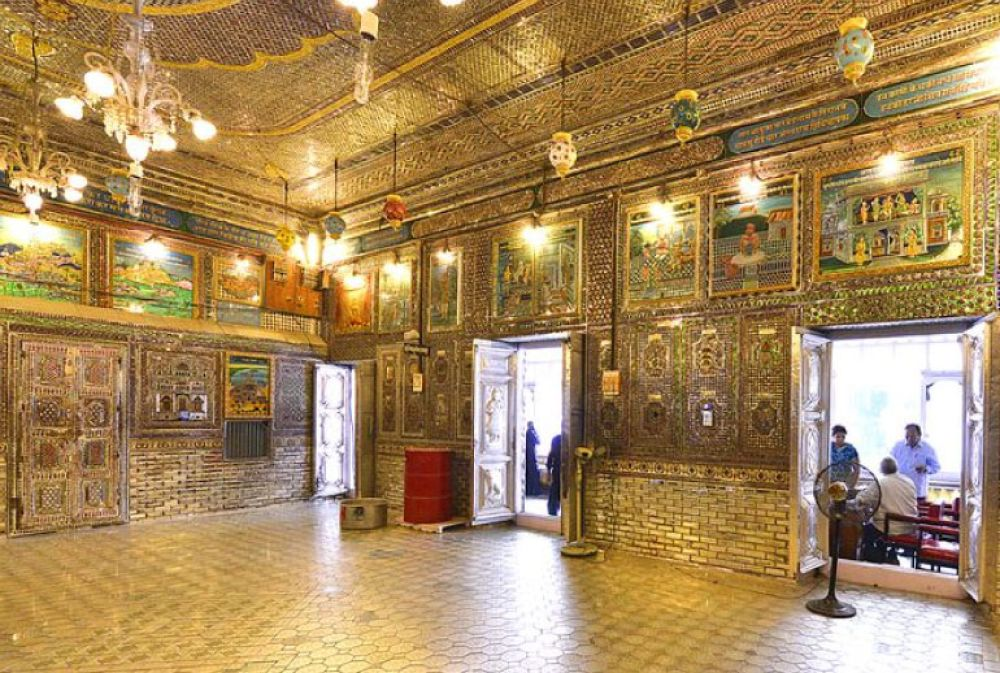

Kanch Mandir
Kanch Mandir, also known as the Glass Temple, is a stunning Jain temple in Indore. The temple's interior is adorned with intricate glass and mirror work, creating a mesmerizing visual effect.
Visitors can appreciate the unique architectural style and learn about Jainism's teachings and values.
